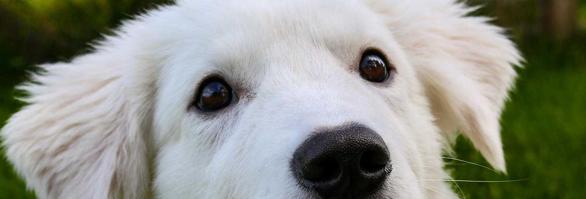
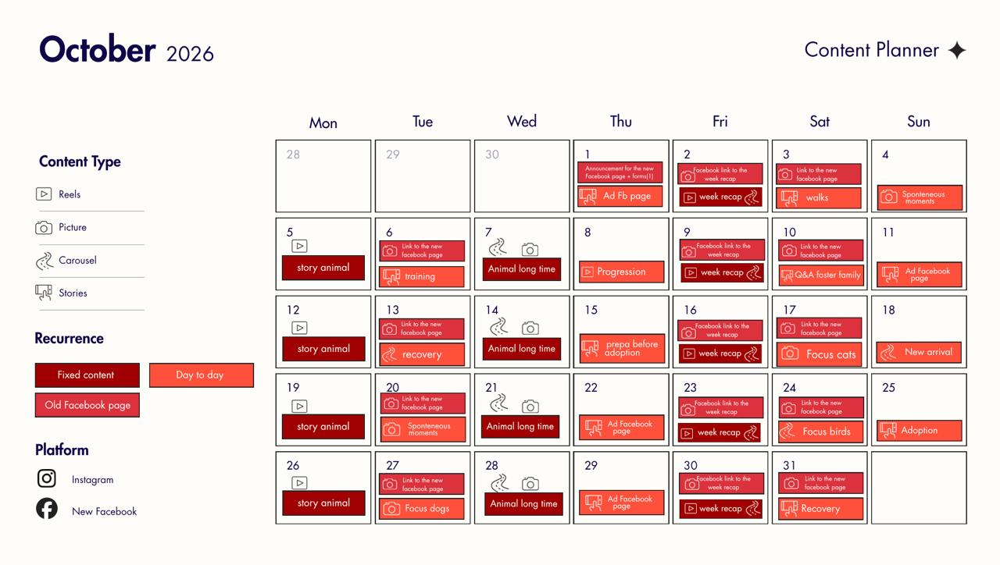
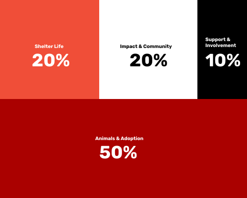

Content plan
Overview of a month

Link to content planFixed content


Day to day content
The day to day content is the content besides the fixed content. It includes mostly stories, news and suddenly or urgent information that should be shared with the followers.
Differents ideas for the day to day content:
New arrivals of animals
Behind the scene (walks, care, training, preparation)
Good news ( adoption, recovery, progress)
Right now ( spontaneous moments of the shelter)
Get involved (donation, fosters family, voluunters)
Interactive ( Q&A, polls,...)
The day to day content can be planned and added to your content plan, if you already know stuff is coming up. But since Roskilde Internat moves fast, unplanned content can come up throughout a week.
Content balance

Animals & Adoption : Give animals visibility and help them find the right home.
Shelter Life : Show the work and everyday life behind each animal.
Impact & Community : Show positive outcomes and strengthen the connection with the local community.
Support & Involvement : Create opportunities to donate, volunteer or get involved without making every communication an appeal for support.
The goal is to create a social media presence people want to follow and not only when they are looking to adopt, but because they want to stay connected to Roskilde Internat.